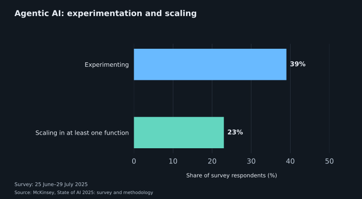

Your next software purchase may come with a promise that an AI agent can do the work for you. Before you decide what that means for your company, follow a single task from the first request to its final record. Someone has to know which customer the request concerns, which rules apply, who may approve the action, and what happens when a connection fails.
That chain explains why the enterprise AI race now reaches beyond the model itself. Microsoft and IBM are competing around the systems that connect intelligence to everyday operations. For business owners, startup teams, and technology leaders, the opportunity lies in choosing useful work and building the right boundaries around it.
This guide examines the announcements, the evidence on adoption, and a practical approach to AI workflow automation. The implementation recommendations and worked example are my analysis. They describe a way to evaluate a project; they do not claim results from a client deployment.
What Microsoft and IBM announced in November 2026
At Microsoft Ignite on 17 November 2026, Microsoft introduced Copilot Workspaces and described Autopilot as a long-running agent for recurring work. Its announcement also emphasized enterprise context, identity, governance, and observability. These are vendor descriptions of capabilities. Availability, licensing, and suitability still require checking against the specific product and tenant.
Separately, IBM and Microsoft announced Imagine Enterprise on 10 November. They described an agentic platform for industry processes, supported by consulting and engineering services. That announcement signals an integration and operating proposition rather than a universally ready replacement for existing business applications.
The useful commercial question follows from those developments: which part of a real process can this technology complete with an acceptable level of supervision? A demonstration can show an impressive response. A deployment must also deal with account permissions, incomplete records, changing rules, and colleagues who need to understand the outcome.
AI adoption figures need a date and a denominator
McKinsey's 2025 State of AI survey found that 23% of respondents reported scaling agentic AI in at least one business function, while another 39% reported experimenting. The survey gathered 1,993 responses across 105 nations between 25 June and 29 July 2025 and weighted results by national GDP contribution.

| Group or target | Value |
|---|---|
| Experimenting | 39% |
| Scaling in at least one function | 23% |
Those figures describe respondents' organizations at a particular time. They do not establish that 23% of every business in the world had an autonomous workforce, or that an experiment produced a financial return. The distinction matters when a small company compares its own readiness with a headline about enterprise adoption.
A better comparison starts with your process baseline. Count how often the task happens, how long completion takes, and how many cases require correction. Then ask what the proposed system changes. An adoption statistic can explain why the market attracts attention. Your own baseline determines whether an investment makes sense.
Define an AI agent through its authority
For planning purposes, distinguish an assistant that proposes an answer from an agent that can invoke tools and advance a task. Both may use similar language models. Their operational consequences differ because one can change records or trigger an external action.
Consider a supplier invoice. A drafting assistant might summarize the invoice for a reviewer. A more capable workflow could extract a reference, retrieve a purchase order, compare amounts, and prepare an approval request. An agent with wider authority might also update the finance system. Each added action creates another question about authorization and recovery.
Write those actions as separate capabilities. Reading an invoice does not imply permission to approve it. Finding a customer does not imply permission to export every customer record. A clear capability list helps the developer design narrow interfaces and helps the business decide which actions need human review.
Also define a stopping point. If the purchase order does not exist, the workflow should route the case to someone who can investigate. Making an uncertainty visible is a valid outcome. Forcing every case through an automated success path can hide the very exceptions staff most need to see.
Choose the first workflow by its business boundary
A promising first task has a recognizable beginning, a useful end, and enough examples to examine its variations. That might mean preparing a support response with links to approved documentation, classifying incoming requests, or assembling the information a reviewer needs before making a decision.
Avoid starting with the broad instruction to automate the whole company. Instead, describe the handoff you want to improve. An operations coordinator receives a request, checks three systems, and forwards a complete case to a colleague. The initial project could reduce the information gathering without changing the colleague's decision authority.
Look for repeated work, but include exception frequency in the assessment. A task that occurs often may still make a poor first project if almost every case demands a different judgment. Conversely, a smaller task may offer a useful learning ground when the input and output have clear definitions.
Create a one-page workflow brief with the trigger, required records, authorized actions, expected output, exception owner, and current effort. Ask the people doing the work to correct it. Their corrections often reveal a missing system or an informal rule that no product demonstration could have discovered on its own.
Data preparation means making records usable
An agent cannot reliably retrieve the right contract when the company uses three conflicting customer identifiers. Before adding intelligence, examine the records the workflow must join. Identify the authoritative system for each field and decide how to handle duplicates, stale documents, and missing values.
For a support assistant, an approved knowledge base needs an owner, a review date, and a way to withdraw obsolete guidance. For a sales workflow, the current account status may need a live lookup rather than a copied document. The best information source depends on the decision the system must support.
Separate document retrieval from transaction authority. A searchable policy can explain a refund rule. The payment system still needs to enforce the permitted amount and the user's role. Keeping these responsibilities distinct gives the business a way to update the policy without weakening the transaction checks.
Make provenance visible to the reviewer. An answer that names the relevant document version and record identifier supports a useful check. An elegant paragraph with no traceable basis creates another research task for staff. Good data preparation therefore concerns both what the system can access and how a person can verify what it used.
Give tools narrow contracts and predictable outputs
An integration should expose a small, explicit operation: retrieve a case by identifier, create a draft, or request an approval. Avoid giving the model a general administrative credential and expecting a prompt to impose all the restrictions. The application should enforce access and valid state changes independently.
For each tool, define its inputs, output structure, permitted caller, timeout, and error conditions. Validate identifiers and amounts before a request reaches the downstream system. Return useful failures such as record not found or approval required, so the workflow can respond appropriately.
Design write operations for repetition. If a worker retries after losing its network connection, it should not create a second invoice or duplicate a customer notification. An idempotency key tied to the business action can help the receiving application recognize a repeated attempt. The exact mechanism depends on the API and the operation.
Keep the integration layer observable even when the model provider changes. You should still be able to see which record lookup failed, which action remained pending, and who approved the final result. This separation also makes it easier to compare models without rebuilding the company's entire workflow around one vendor's conversation format.
Treat incoming content as data, not permission
A document may contain instructions that conflict with the task. A support email could ask the assistant to ignore its rules or disclose unrelated information. The OWASP GenAI Security Project documents risks around language-model applications and provides a useful starting point for a threat review.
My recommended design puts sensitive decisions behind application controls. The model may propose an action, but the server checks the authenticated actor, the target record, the allowed operation, and any required approval. Instructions found inside retrieved material should not expand those permissions.
Include hostile and misleading inputs in evaluation. Test a document containing an unrelated command, a request for another customer's information, and an instruction disguised as a quotation. Record what the application actually does, rather than judging only whether the final answer sounds cautious.
Logs deserve similar care. They can help investigate a failure, but they can also reproduce sensitive prompts and document contents. Choose what to capture, restrict access, and define retention. A useful audit trail normally needs action identifiers and decisions; it does not automatically need a permanent copy of every confidential passage the system encountered.
Human approval should fit the decision
Approval works best when the reviewer sees the proposed action, its basis, and its consequences together. A button marked approve gives little protection if the person must open several systems to discover what the system intends to change. Design the review screen as part of the workflow, not as a ceremonial final step.
For an invoice case, show the supplier, amount, matched order, discrepancies, and source document. Distinguish extracted information from verified database values. Let the reviewer correct the proposal and explain the reason without losing the original evidence.
Choose approval thresholds through the business's own rules. A company might allow automatic categorization while reserving financial commitments for an authorized person. Another might permit a narrow record update after deterministic validation. The important point is to document the boundary rather than assuming all automation requires the same supervision.
Also plan for absence and disagreement. If the assigned reviewer is unavailable, who receives the case? If two people act at once, which state wins? These ordinary collaboration questions matter as much as the model's reasoning. They turn an individual demo into an application a team can operate throughout the working week.
Evaluate complete tasks before polished answers
Build an evaluation set from representative, appropriately handled examples. Include routine cases, missing information, conflicting records, and cases that should stop. For each example, define an acceptable outcome and the evidence needed to judge it. Preserve a separate set for later checks so that tuning does not simply memorize every test case.
Measure different dimensions separately. Extraction accuracy, valid tool use, permission enforcement, response time, reviewer effort, and completed business outcomes answer different questions. A single quality percentage can conceal a serious weakness if it combines easy summaries with high-consequence actions.
Define the denominator. A completion rate should state whether it includes every incoming case or only cases admitted after a filter. A time-saving claim should include review and rework. If difficult cases disappear from the measurement, the result will look better without describing the real workload.
Keep a version record for the model, prompts, tools, retrieval configuration, and evaluation set. Then rerun the relevant checks when something changes. This is where AI engineering judgment becomes practical: the team decides which evidence earns a change the right to reach users, rather than treating a more fluent response as sufficient proof.
Calculate value with the whole operating cost
Begin with the task's volume and current cost of completion. Estimate the reduction in handling effort, then subtract model usage, integrations, infrastructure, review, support, and ongoing evaluation. Use a range where the assumptions remain uncertain. A precise-looking spreadsheet does not improve an unsupported estimate.
For example, a hypothetical team might process 400 eligible cases each month and save six minutes of net handling per case. That would release 40 hours of capacity before other costs. Those numbers illustrate the arithmetic only. Whether the capacity becomes lower expenditure, faster service, or time for other work depends on how the company uses it.
Include setup and transition costs. Staff need training, old queues may need reconciliation, and someone must support the first live cases. A project can deliver a useful result while taking longer to pay back than a comparison of token prices suggests.
Review economics again after launch. A growing volume can improve the case, but additional supervision or a more expensive integration can weaken it. My guide to buying, configuring, or building business software explains how to compare alternatives with consistent assumptions, including the option of improving the existing process without adding an agent.
Design recovery before expanding autonomy
Ask what happens when a tool succeeds but the response never reaches the agent. Ask what happens when a model request times out after staff have already approved the case. A recoverable workflow stores durable state outside the conversation and can distinguish a pending action from a confirmed result.
Use explicit states such as received, prepared, awaiting approval, executing, completed, and needs investigation. The names can vary. Their purpose is to let a person find the work and take the right next step without reconstructing a long chat transcript.
Provide a way to pause new automation while preserving the queue. Staff should know how to continue through a manual path and how to reconcile actions already in flight. Reversing a database update may require a compensating action; sending an email may have no true undo. Recovery needs to reflect the actual operation.
Expand only after the team understands the failure modes of the narrower release. A reliable classification tool can earn permission to prepare a draft. A well-evaluated draft workflow may later support a limited write operation. This sequence creates evidence for each boundary instead of granting broad authority because the first demonstration looked convincing.
A practical pilot for an operations team
Consider a fictional maintenance company receiving customer emails about repair requests. Its first pilot could identify the property, classify the issue, retrieve the service agreement, and prepare a case for a dispatcher. It would stop when the address or agreement is ambiguous. The dispatcher would retain assignment authority.
The pilot would need a small intake interface, a record lookup, a retrieval source for approved service terms, a review queue, and an activity log. It would not need to replace the scheduling system or generate autonomous purchasing decisions. That scope makes the handoff measurable.
During the trial, compare complete cases with the existing approach. Count missing fields, wrong matches, review time, and cases that require a phone call. Invite dispatchers to explain why a prepared case was unhelpful. Their feedback should influence both the interface and the evaluation examples.
At the decision point, document what the pilot established and what remains uncertain. The next investment might be better customer identifiers rather than a larger model. It might be a clearer form that reduces ambiguous emails. A useful AI project should improve the work even when its findings lead to a less elaborate solution than the original proposal.
Keep an architecture decision record
When a pilot becomes a product, preserve the reasons behind its architecture. Record why the team chose a particular model interface, retrieval source, approval rule, and deployment pattern. Include the alternatives considered and the evidence that favored the current choice. This can remain a short document alongside the source repository.
For example, the team might choose a direct database lookup for customer status because freshness matters, while using document retrieval for a slower-changing policy library. Another decision might keep an action manual because the integration cannot yet provide a safe retry. Those explanations help a future maintainer understand a deliberate boundary.
Document unresolved questions separately from accepted decisions. A team should be able to see that an integration's rate limit still needs testing or that a larger evaluation set remains necessary. Otherwise, a provisional assumption can become an invisible production dependency simply because it appeared in an early prototype.
Also identify the replacement boundary. If the company changes model providers, which component needs modification? If the knowledge source moves, which evaluation cases should run again? A modest amount of architectural separation can make those changes more manageable. The objective is understandable software that the business can extend, rather than an elaborate abstraction for every possible future.
This record also supports procurement. An owner can explain why a specialized integration deserves budget or why a broad platform license has not yet earned its place. Technical decisions become reviewable business choices when the evidence remains attached to them.
Train the team on exceptions and feedback
Users need to know what the system does, where it stops, and how to question a result. Training should include an ordinary successful case and a deliberately difficult one. Show how the interface presents uncertainty, how to correct a prepared action, and how to find work that needs investigation.
Make feedback easy to connect to a case. A general comment that the assistant was wrong gives the engineering team little to reproduce. A record identifier, the observed behavior, the expected behavior, and the relevant source can turn the report into an evaluation example. Handle that information through an appropriate support route rather than an uncontrolled public channel.
Explain that approving a proposal remains a real decision. Staff should not assume that a polished summary has already passed every business check. Equally, the interface should avoid forcing reviewers to redo the entire task from scratch. Good review design gives them the evidence needed to make an efficient, informed judgment.
Choose a feedback owner and a review rhythm. Some reports indicate a documentation problem, some reveal missing data, and some require a code change. Keep those categories understandable so the team can direct effort toward the actual cause. A useful system improves through specific observations rather than a growing collection of prompt changes with no recorded purpose.
Finally, tell staff what changed after their feedback. Closing that loop encourages accurate reporting and helps them recalibrate their expectations. Adoption becomes healthier when people can see the system's limits and improvements, rather than feeling pressure to trust it because the company has purchased an AI product.
Questions to settle before signing a contract
Can we use an existing platform?
Often, an existing platform can cover part of the requirement. Check the actual permissions, connectors, export options, and operating costs of the proposed configuration. Compare it against a focused integration or custom application using the same sample task. Product category alone does not establish fit.
Who owns the workflow and its records?
Specify the accounts, source code where applicable, configuration, documents, and operational data the business controls. Identify what remains vendor-managed and what you can retrieve on exit. Keep a handover checklist that another authorized engineer can follow.
What would make us stop the rollout?
Agree on a small set of decision rules before the trial: unacceptable permission failures, excessive correction, inability to recover work, or an operating cost that exceeds the business case. Also record the conditions for continuing. A pilot should support a decision, including the decision to pause.
Turn the AI announcement into a useful next step
The strongest response to the enterprise AI race is a well-defined piece of work. Start with the people, records, permissions, and exceptions. Then choose the platform and level of automation that can support them. This approach gives a startup or an established company a concrete way to evaluate the same developments making headlines at the largest technology vendors.
I help teams translate those requirements into business applications, integrations, and practical AI features. You can explore my web application services, review my portfolio projects, or read about AI security and audit trails. If your team has a repeated task worth examining, share the process and the result you need. We can turn that brief into a scoped technical plan, a testable pilot, and a handover your team can use.
Sources and research notes
Primary publications and official documentation consulted for this guide. Research periods are stated beside the relevant claims and charts. Implementation checklists and worked examples represent my analysis; fictional examples are not client results. Reviewed 22 November 2026.